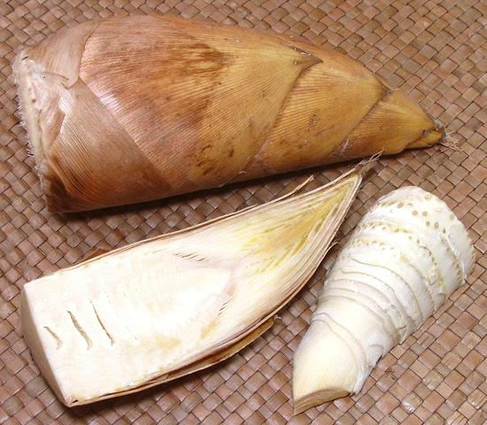
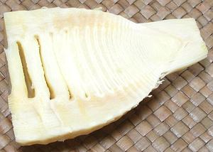

Bamboo Shoots, Unprocessed

[probably Phyllostachys edulis]
Unprocessed bamboo shoots are now often available in Southern
California. While more trouble to prepare, the flavor of fresh bamboo
is superior to vacuum bagged and a lot superior to canned. The photo
specimens are a little old. Preferably they should be no darker than
the photo specimens. From the shape and structure of the edible shoot,
I identify this as P. edulis. The photo specimen at the top was
8 inches long, 3-1/4 inches diameter at the base (average, they are
always oval) and weighed 1 [pimd 5-7/8 ounces.
More on Bamboo.

The shape and internal structure is much the same as the much large
Winter Bamboo, and quite different from the other available bamboo
shoots, so I have tentatively identified it as smaller sprouts of
Phyllostachys edulis. This specimen is different at the tip
because edible sheath bases have been left on.
Buying:
These can often be had from the large Asian
markets here in Los Angeles. Price varies from 2017 US $2.99 to $3.99
per pound, depending on market. Ideally, the color should be lighter
than the photo specimen. Examine the bottom, the less dried out the
better, but there definitely should be no trace of mold.
Storage:
Basically, don't. They're already a bit
old by time they get here, but can be held a day or two at room
temperature, or a little longer loosely bagged and refrigerated.
Prep:
- Cut about 1/4 inch off the bottom.
- Strip off all the brown sheaths as has been done to the examples.
Sheaths at the tip with no brown can be left.
- I usually then cut them in half lengthwise to expose the chambers
and speed detox.
- Put them in a pot with plenty of water. Bring to a boil, then keep
at a fast simmer for about 20 minutes, uncovered so the cyanide can
escape easily. No, it isn't going to gas you to death if you're
boiling less than a ton or so.
- You will probably have to trim a little more off the base if it is
hard. The feel of a cut will inform you if you need to cut more.
Yield:
Edible yield from 2 shoots weighing 33-1/2 ounces
was 14-3/4 ounces or 44%. I have had yields as high as 50% with shoots
from other purchases. It probably depends on season.
Cooking:
Just do as the recipe says. Further cooking
is not really necessary once they've been simmered.
gr_bbfrshz 170106 - www.clovegarden.com
©Andrew Grygus - agryg@clovegarden.com - Photos on this
page not otherwise credited are © cg1 -
Linking to and non-commercial use of this page permitted